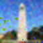
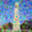
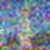
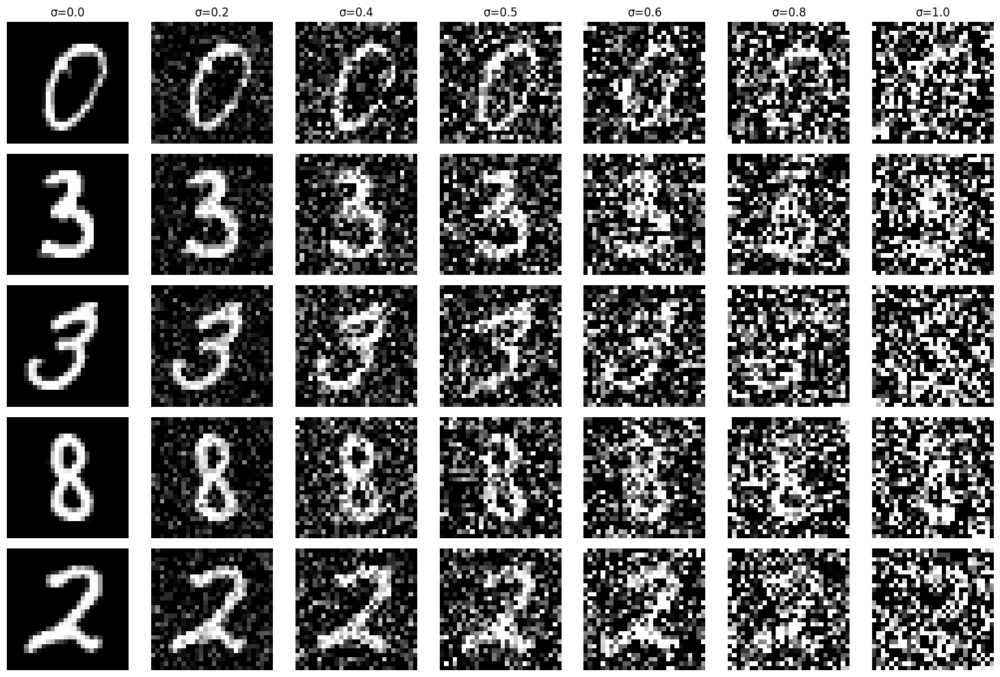
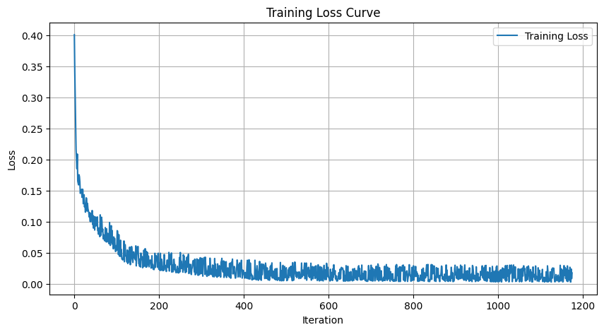
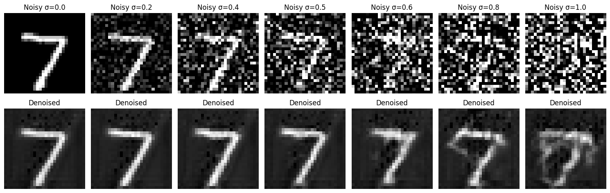

← BACK
Diffusion Models
Denoising, Sampling & Image-to-Image Translation
Introduction
An exploration of diffusion models: how images can be pushed into pure noise and then reconstructed step-by-step into coherent content. The first half of this work uses Stability AI's pretrained DeepFloyd IF model to study sampling, guidance, and image-to-image translation. The second trains a custom denoising UNet from scratch on MNIST.
Setup & Prompt Quality
DeepFloyd IF is a two-stage generative model: the first stage drafts a base image, the second refines it to higher resolution. I sampled the prompts "an oil painting of a snowy mountain village," "a man wearing a hat," and "a rocket ship" at different step counts (seed fixed at 88). More steps adds detail and structure, but not necessarily realism. Higher step counts tend to multiply form and ornament rather than improve the plausibility of the scene.
Forward Process
The forward process progressively adds noise to a clean image, eventually collapsing it into pure Gaussian noise. Sampling is the reverse: reconstruct the clean image by undoing that noising step-by-step. Below I apply the noise schedule to a test image of the Berkeley Campanile at three corruption levels.

original
Classical Denoising Baseline
As a baseline, I tried to recover the original image using classical Gaussian blur. The results show its limits: smoothing removes some high-frequency noise but can't recover the structure that diffusion models do. Blur is a fundamentally lossy prior.

gaussian denoise

gaussian denoise

gaussian denoise
One-Step Denoising
Passing the noisy image through the pretrained DeepFloyd UNet once, a single-step denoise, does dramatically better than Gaussian blur. The UNet projects the noisy input toward the image manifold it learned during training. But a single jump isn't enough to cleanly reconstruct from heavy noise; detail stays muddy at high noise levels.
Iterative Denoising
Iterative denoising is where diffusion models shine: instead of one big jump, the UNet takes many small steps toward a clean image. Striding through timesteps rather than running every single one trades a small amount of quality for a large speedup. The sequence below shows how the image sharpens as timesteps advance.
Side-by-side comparison of the three denoising approaches at the same starting noise level:
Sampling from Pure Noise
Instead of starting from a noisy real image, I start from pure random noise and let the iterative process synthesize an image from scratch. The model "hallucinates" plausible content by repeatedly denoising. Five generations below, each starting from a different noise seed:
Classifier-Free Guidance
Classifier-free guidance (CFG) amplifies the influence of the text prompt during sampling by extrapolating between a conditional and an unconditional prediction at every step. The effect is crisper, more prompt-aligned outputs, at the cost of slightly less diversity.
Image-to-Image Translation
Adding noise to a real image and then denoising it under a text prompt nudges the image toward the prompt while retaining some of the original composition. The more noise you start with, the further the model is free to drift. Below, the Campanile and two stills from the show Arcane are pulled toward "a high quality photo" at progressively higher noise levels.
original
Hand-Drawn & Web Images
The same translation technique takes flat, abstracted inputs (rough sketches and pulled web images) and pushes them toward natural photographic rendering. Low noise produces subtle refinement; high noise produces dramatic reinterpretation.
Inpainting
Inpainting re-samples only the pixels inside a mask, letting the surrounding image constrain what's plausible. The model fills the masked region with coherent content stitched to the unmasked context.
Text-Conditioned Translation
Combining image-to-image translation with textual conditioning lets a prompt steer how an image is reinterpreted. The same source image becomes a different subject at each noise level.
original
Training a Denoising UNet
Up to this point I'd been using a pretrained diffusion model. Next I implemented and trained my own single-step denoising UNet from scratch on MNIST: no class conditioning, just learning to undo Gaussian noise. The UNet architecture uses encoder/decoder blocks with skip connections, letting the network reason about both fine texture and global structure.
Training Setup
MNIST, 5 epochs, batch size 256, Adam optimizer, L2 loss between the network's output and the clean image. Noise is freshly sampled every batch so the model sees a wide range of corruptions across training. The loss curve below shows smooth convergence; outputs clearly improve between epoch 1 and epoch 5.

noise schedule

training loss
Out-of-Distribution Testing
To probe generalization, I evaluated the trained model on noise levels it hadn't been trained on. The UNet degrades gracefully: reconstruction quality falls off smoothly as noise exceeds the training range rather than breaking abruptly.

out-of-distribution denoising across noise levels